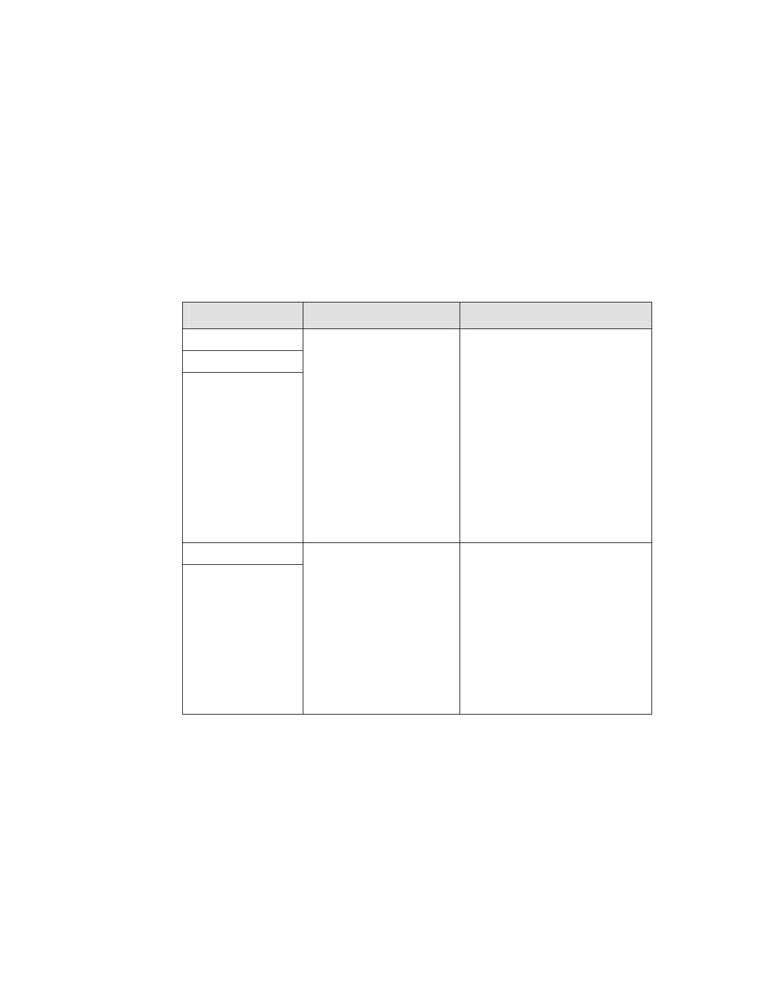

理，市府爰就其餘範圍，依都市計畫法第 22 條擬定本細部計
畫案。
二、細部計畫內容
（一）計畫區面積約 4.94 公頃，土地權屬包括國有、市有、台電
公司以及私有。
（二）訂定土地使用分區管制
1.使用強度及允許使用
使用分區
使用強度
允許使用
特定專用區（一） 建蔽率及容積率依第三 建築物之第一、二層限供商業
特定專用區（二） 種住宅區、第三之一種 及公共使用外，其餘比照臺北
特定專用區（三） 住宅區規定辦理
市土地使用分區管制自治條
※第三種住宅區建蔽率 例第三種商業區辦理。
不得超過 45％、容積
率不得超過 225％。
※第三之一種住宅區建
蔽 率 不 得 超 過 45
％、容積率不得超過
300％
特定專用區（四） 建蔽率 45％，容積
1. 未 來 可 作 為 本 府 公 務 機
特定專用區（五） 率為 400％。
關、市政建設或公營住宅
籌備基地。
2.建築物之第一、二層限供商
業及公共使用外，其餘比
照臺北市土地使用分區管
制自治條例第三種商業區
辦理。
2.特定專用區（一）（二）、（三）國有土地部分容積率得提高至
百分之四百，增加之容積應由開發者向臺北市政府以市價購
買，其價金由財政部與臺北市政府各百分之五十均分。除前
開增額容積外，本計畫不得申請任何容積獎勵及容積移入。
3.劃設公園用地、人行步道用地以及變電所用地。
（三）調整更新地區範圍
第 - 2 - 頁，共 31 頁